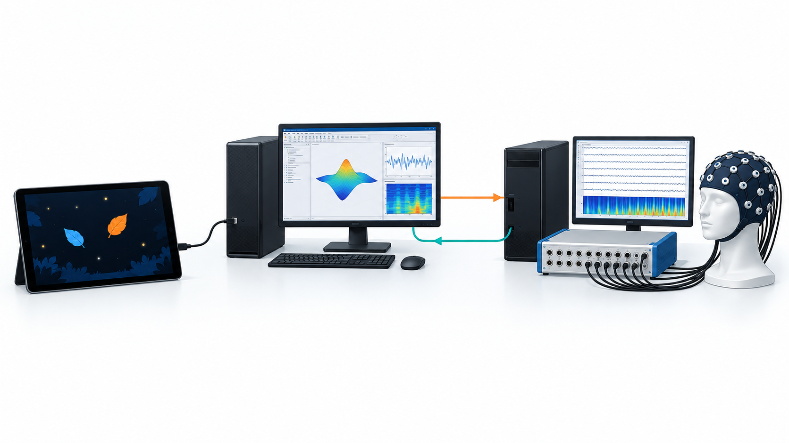
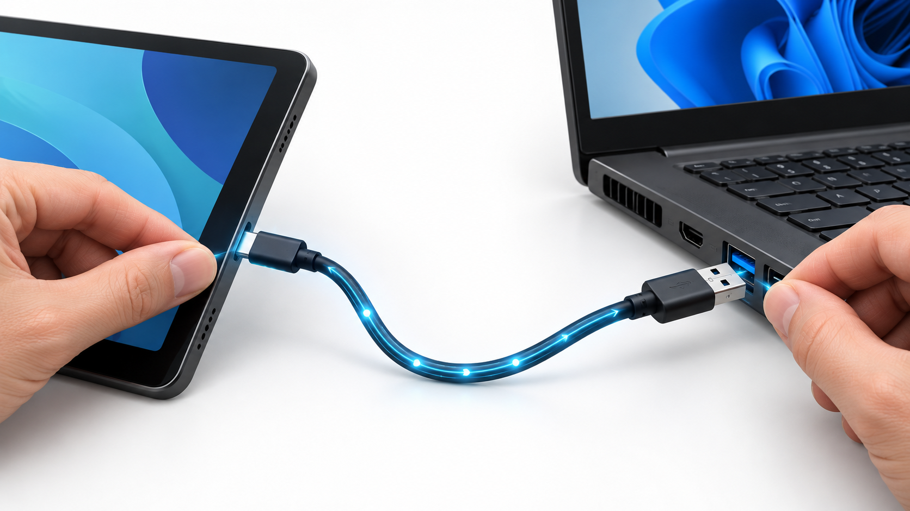

What the new path does
RT_acquisition_CCA.m writes three doubles to nf.txt; P reads that same live file and streams it to Unity.Unity
ADB + MATLAB bridge
Biosemi + RT CCA
Marker direction: tablet → USB TCP → P MATLAB → one raw byte on COM9 → A trigger input → GDF/FieldTrip event. NF direction: A nf.txt → file path accessible from P → USB TCP → Unity. The USB TCP socket uses port 5010 and stays on loopback at both ends; no tablet Wi-Fi address is required.
One-time setup
1. Prepare the cable and tablet
Use a data-capable USB-C to USB-A cable. On Android, enable Developer options and USB debugging. Connect it to P and approve the USB debugging prompt on the tablet. Install Android SDK Platform Tools (adb.exe) on P, or use the existing SDK installation.
2. Confirm the two room-specific paths
Find the serial port that used to carry the Psychtoolbox trigger bytes. The previous code used COM9 at 115200 baud, 8 data bits, one stop bit and no parity. Determine the path as seen from P to the live nf.txt written by A. This might be a mapped drive or a UNC network share. The P process must be able to open that exact live file.

Start a recording session
- Start A-system recording and real-time CCA.Start Biosemi/ActiView and the existing FieldTrip buffer, and record the GDF as usual. Run
RT_experiment_CCA.mon A. ItsRT_acquisition_CCA.mwrites the binarynf.txt. Confirm the file P will read is the same live file. - Start the MATLAB bridge on P.From the FeatureAttention folder in MATLAB 2015, use the real P-visible NF path and serial port:
run_biosemi_usb_bridge('X:\FeatureAttention\nf.txt', 'COM9', 5010)For a local/shared working copy that already receives A's live
nf.txt, simply runrun_biosemi_usb_bridge. The function opens the serial port and waits for the tablet. - Start automatic USB port reversal on P.Open a separate PowerShell window in the FeatureAttention folder and run:
powershell -ExecutionPolicy Bypass -File .\Start-BiosemiUsb.ps1The helper discovers one authorized physical tablet and maintains
adb reverse tcp:5010 tcp:5010after a USB reconnect. If several tablets are connected, pass-DeviceSerial <serial>. Leave the helper window open during the run. - Select the Unity source on the tablet.In the Leaf Game settings select
UsbBiosemiforNf Source Type. KeepUsb Biosemi Portat 5010 unless you changed it in both P commands. Apply settings. The game waits for a complete NF record before showing the block instructions. Then begin the block.
What to expect in the signals
| Code | Meaning in this Unity game | Expected effect |
|---|---|---|
| 0 | Reset on USB connection | P writes raw byte 0 |
| 20 / 21 | C1 / C2 trial start | A starts NF computation for either code |
| 45 | Cue onset | GDF marker |
| 50 | Color reveal / success | GDF marker |
| 40 | Participant response | GDF marker |
| 30 | Trial stop | A closes the trial and resets NF |
RT_acquisition_CCA.m now accepts both 20 and 21 as trial starts. The NF record is 24 bytes: little-endian doubles [NF_17gt19, NF_19gt17, sampleCount]. Unity uses the first value for C1 and the second for C2. P forwards the record only when its bytes change.
Timing: the marker is emitted by Unity after its presentation event and then passes through ADB, the P MATLAB polling loop, the serial output and the A acquisition path. This is a low-latency software route, but it does not guarantee a fixed delay in EEG samples. Determine the actual offset and jitter from recorded GDF markers against a screen photodiode before treating markers as precise visual-onset times.
If the connection does not come up
| Observation | Check |
|---|---|
| PowerShell waits for an authorized tablet | Use a data cable, enable USB debugging, approve the tablet prompt; check adb devices. |
| Unity times out waiting for NF | Confirm P MATLAB says “Tablet connected”, then confirm P can read the live 24-byte nf.txt. Check port 5010 in Unity and PowerShell. |
| P cannot open COM9 | Close the old Psychtoolbox trigger process; verify the actual port in Windows Device Manager, then pass that name as the second MATLAB argument. |
| Markers print on P but do not appear in GDF | Check the P-to-A serial/trigger hardware and A's trigger recording setup. The bridge sends the number directly as one byte. |
| NF stays at zero or stale | Verify A's FieldTrip buffer, RT CCA function and P-visible shared file path. A resets the file to zeros at each accepted trial start. |
Stop the P MATLAB function with Ctrl+C after the session, then stop the PowerShell helper. Keep all room-specific paths in the command arguments; the code does not assume a drive letter on A or P.
Files and references
Start-BiosemiUsb.ps1 maintains the cable mapping; run_biosemi_usb_bridge.m owns P's serial port and NF relay; RT_files/RT_acquisition_CCA.m accepts both trial starts; the Unity Leaf Game exposes UsbBiosemi.
ADB reverse behavior: Android Developers. Legacy serial byte writes: MathWorks. Android networking permission in Unity: Unity Manual.